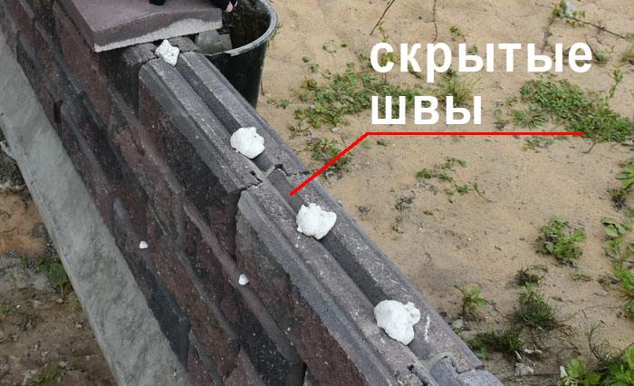

Монтаж забора на специализированную клей-пену
Уникальная и запатентованная конструкция блоков BRICK дает возможность значительно упростить и ускорить процесс монтажа забора.
Только в конструкции наших блоков, предусмотрены скрытые швы, позволяющие использовать при монтаже вместо плиточного клея специализированную монтажную клей-пену.
Преимущества монтажа на клей-пену
при монтаже на монтажную клей-пену:
- усиливается прочность и надежность конструкции
- скорость монтажа увеличивается в несколько раз
- затраты на дополнительные материалы, становятся минимальными
- не страдает внешний вид забора от появления высолов
ВАЖНО! К сожалению, в ряде случаев при монтаже наших заборов неподотчетными нам организациями, были выявлены нарушения.В частности, клей для укладки накрывочных элементов (крышек столба и полотна забора) наносился непропорционально внутренним швам блока, в связи с чем, под крышками появились солевые подтеки из плиточного клея.
Если вы уже столкнулись с данной проблемой, предлагаем вам обратиться в наш отдел рекламации для бесплатного устранения солевых выделений на вашем заборе.
Монтаж заборов BRICK на специализированную клей-пену для кладки блоков позволяет не только упростить, ускорить и удешевить процесс, но и предотвратить появление высолов и сохранить привлекательный внешний вид забора.